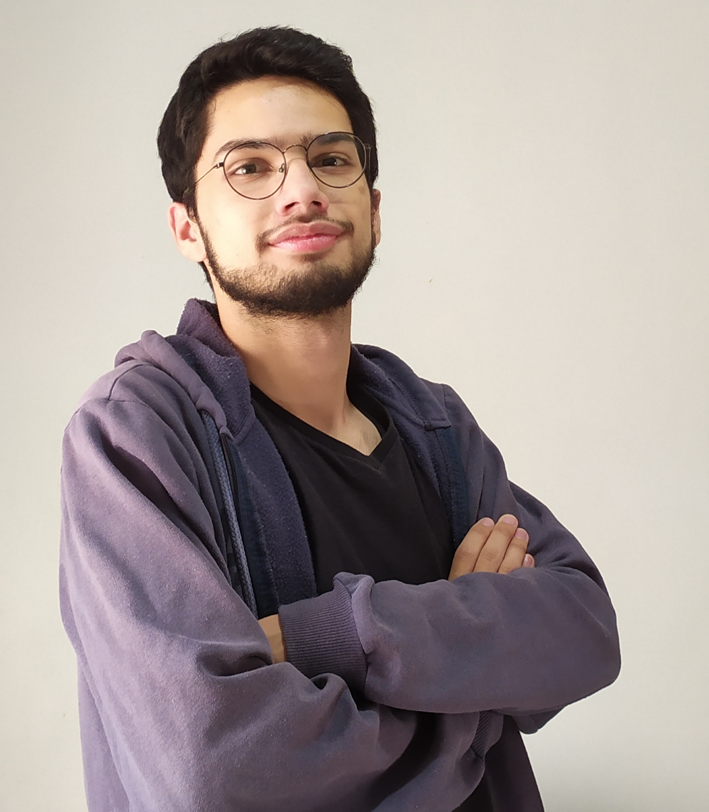
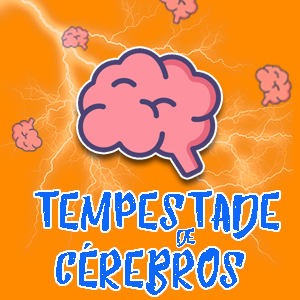

Uma breve história
Olá, eu sou Erick Tauã Amaral de Paula, mas pode me chamar apenas de Erick.
Nessa sessão e vou contar um pouco sobre a minha história.
Nascido em 23 de abril de 2001, filho de um pai e uma mãe que ainda estão juntos.
Cresci na cidade de Toledo-PR desde sempre, além de ser a cidade que eu resido atualmente,
pois devido a falta de dinheiro ao destino, nunca tive a oportunidade de viver em outro
lugar.
Terminei o ensino médio em 2019 e ingressei na faculdade em 2020, porém devido a um tal vírus mortal que assolou o mundo nesse ano, acabei perdendo 2 períodos do curso que eu ingressei, Sistemas para internet na Universidade Tecnológica Federal do Paraná - UTFPR. Mas continuo firme no curso a distância agora em 2021. Inicialmente, não foi o curso que escolhi, eu queria fazer engenharia de controle e automação, uma área que eu tenho muito apreço e ainda por cima poderia ir morar fora, mas especificamente em Joinville-SC. Mas como não passei no vestibular da Federal de lá, ingressei no que foi possível, e até que não foi ruim, peguei gosto pela área de desenvolvimento de sistemas, tanto que durante o período parado da faculdade eu comprei alguns cursos de programação fornecidos pelo grupo Alura, aprendi muito e gostei bastante da área.
Carreira

Apesar de trabalhar com tecnologia e desenvolvimento seja algo produtivo e principalmente, com um ótimo retorno financeiro, não pretendo ficar muito nessa área. Minha verdadeira paixão profissional sempre foi o meio artístico e a criação de conteúdo, além de pesquisa e relato de histórias, por isso, quando for possível, quero começar no ramo de publicidade ou jornalismo, e já pensando nos conhecimentos que tenho, posso unir o desenvolvimento de sistemas para internet com as outras áreas.
Atualmente, eu trabalho como aprendiz na Prati Donaduzzi, empresa de medicamentos genéricos, estou no setor de logística e planejamento de demanda. Espero ser efetivado em breve, pois é sempre bom ter emprego. É uma atividade que eu gosto, apesar de não ser o que eu almejo para minha carreira, mas de qualquer forma é experiência. Outras experiências profissionais que tive: meu primeiro emprego também foi como aprendiz, em 2018-2019 em uma cooperativa agrícola. Como não fui efeitivado, fiquei alguns meses sem trabalho, retornando no ínicio de 2020, por seis meses fui promotor de vendas de bebidas, que é nada mais do que repositor de produtos em supermercados, contudo, abatecem apenas uma determinada marca. Digamos que foi uma péssima experiência, pagava mal e não agregou nada na minha carreira, foi o último emprego antes do meu atual.
Hobbies e gostos pessoais
Eu sou um cara bem nerd, então minhas atividades geralmente envonlvem jogos, filmes, séries, livros. Entre ficar em casa e sair para uma balada, meu quarto, sem sombra de dúvida. Apesar de que eu até gosto de fazer atividade física, sair para correr de vez em quando ou fazer alguns exercícios em casa. E recentemente, comecei a gostar de pedalar, uma ex-namorada me apresentou esse hábito e acabei gostando um pouco. Mas é mais para não morrer de sendentarismo, não que eu realmente me importe em ter um corpo todo treinado.

Quanto aos meus gostos de verdade, é viver em histórias fantasisosas. Não me considero um nerd
raiz,
que leu todos os quadrinhos da era de ouro, mas tenho muito carinho por tudo relacionado a super-heróis.
Principalmente, o Universo Cinematográfico da Marvel, simplesmente, obras de arte. Vingadores - Guerra
Infinita
e Ultimato foram muito marcantes pra mim. Além é claro, eu amo Star Wars, apesar dos filmes novos serem
meio ruinzinhos,
as séries ambientadas no universo dos filmes parecem que vão salvar a franquia muito bem, como foi o
caso de O Mandaloriano.
Falando de séries, eu amo uma boa comédia, minhas favoritas são The Office e How I Met
Your Mother.
Mas curto algumas mais de drama como The Walking Dead, até a 8 temporada pelo menos foi até onde
eu vi, depois ficou meio sem graça.
E Breaking Bad, essa é boa demais.
Também gosto de ler, costumava ler muito mais, quando era novo, agora que vem as responsabilidades, falta
de tempo é
a desculpa que eu uso. Com certeza, Harry Potter, são os livros que mais marcaram minha vida, desde dos
15
tenho uma paixão por essa saga. Porém, também sou fã dos clássicos, como O Hobbit e Senhor dos Anéis,
Guerra dos Tronos
é muito bom, mas não terminei de ler pois fiquei com preguiça, então acompanhei apenas a série um
grande arrependimento.
Jogo League of Legends, o famoso lolzinho. Eu não curtia até 2019, mas fui influenciado por alguns
amigos.
Digamos que não é muito saudável, pois como é um jogo de equipe e não tem uma comunicação muito prática
durante
as partidas online, o que leva a um estresse a cada vez que logamos no jogo. Minha classe favorita é de
tanques,
são os personagens parrudos que protegem o time e aguentam muito tempo em luta, também é minha função
preferida em RPGs de mesa.
Que apesar de ter jogado pouquíssimas vezes é um tipo de jogo que eu acho muito legal.

Como não tenho um computador muito potente, jogo apenas, LoL, mas já me arrisquei jogar alguns
clássicos em emuladores de videogames antigos,
como a maioria dos jogos da franquia Pokemon, e os jogos com as melhores histórias de todos os tempos,
The Legend of Zelda.
Fora esses, eu jogo no Playstation 4, os games que mais me pegaram foi Spider-Man (se é de super-herói
eu já gosto) e God of War,
simplesmente, obra de arte, sem palavras para descrever.
As demais atividades que faço estão relacionadas há o meu gosto artístico, eu gosto de escrever histórias, ou melhor, eu gosto de criar histórias, personagens, cenas, diálogos, já escrevi algumas de fato, mas sou meio preguiçoso. Eu também já produzi um podcast uma vez, chamo de Tempestade de cérebros, é só eu falando de assuntos que eu acho legal. Tem alguns episódios, e apesar de eu achar muito legal de gravar e editar, cansa e não dá um retorno de verdade, pois como eu faço por hobbie, acabo não divulgando muito, é mais para meus amigos mais próximos.